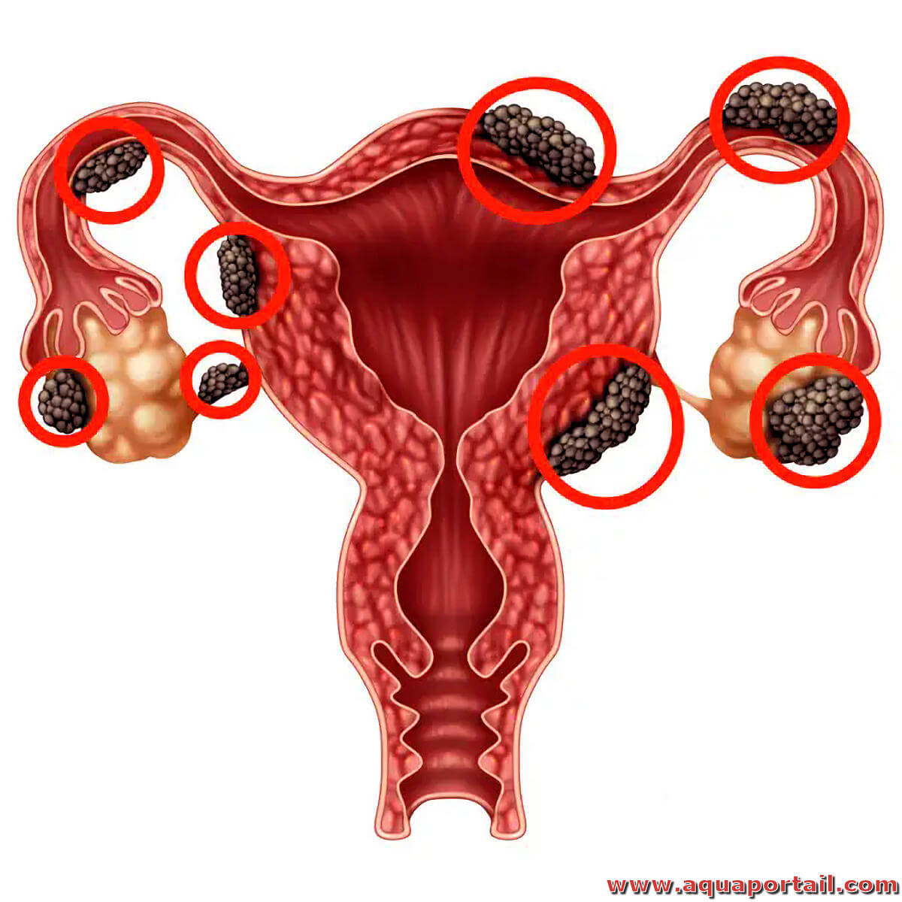

Endométriose
Les cystites sont des inflammations de la vessie, souvent causées par des infections bactériennes. Elles se manifestent par des symptômes urinaires tels que des douleurs, des brûlures et des envies fréquentes d'uriner.
Les principales sortes de cystites :

La pyélonéphrite est une infection bactérienne aiguë ou chronique des reins, plus précisément du bassinet (pyélo-) et du parenchyme rénal. Elle résulte généralement de la propagation ascendante d’une infection urinaire (cystite) non traitée.
Les principales sortes de pyélonéphrites :

Les calculs rénaux sont des formations solides cristallisées qui se développent dans les reins à partir de minéraux et de sels présents dans l'urine. Ils peuvent rester dans les reins ou descendre dans les voies urinaires, causant des douleurs intenses appelées coliques néphrétiques.
Les principales sortes de calculs rénaux :

La prostatite est une inflammation de la prostate, une petite glande située sous la vessie chez l’homme. Elle peut être infectieuse (due à une bactérie) ou non infectieuse, et elle peut être aiguë ou chronique.
Les principales sortes de prostatite :

L’Hyperplasie Bénigne de la Prostate (HBP) est une augmentation non cancéreuse du volume de la prostate. Elle survient principalement chez les hommes de plus de 50 ans et peut comprimer l’urètre, gênant ainsi l’écoulement de l’urine.
Les principales sortes de HBP :

Le cancer de la prostate est une tumeur maligne qui se développe dans les cellules de la prostate, une glande de l'appareil reproducteur masculin. Il est l’un des cancers les plus fréquents chez les hommes, surtout après 50 ans.
Les principales sortes de cancer de la prostate :

L’incontinence urinaire est une perte involontaire d’urine, due à un dysfonctionnement des mécanismes de contrôle de la vessie. Elle touche les femmes plus fréquemment que les hommes, surtout avec l’âge ou après un accouchement.
Les principales sortes d’incontinence urinaire :
L’endométriose est une maladie chronique dans laquelle des cellules semblables à celles de la muqueuse utérine (l’endomètre) se développent en dehors de l’utérus. Ces cellules réagissent aux hormones du cycle menstruel, provoquant inflammations, douleurs et parfois infertilité.
Les principales sortes d’endométriose :
Le syndrome des ovaires polykystiques (SOPK) est un trouble hormonal fréquent qui affecte les femmes en âge de procréer. Il se caractérise par une production excessive d’androgènes (hormones mâles), des troubles de l’ovulation, et souvent, des ovaires augmentés de volume contenant de multiples petits kystes.
Les principales sortes de SOPK :

Le cancer de l’ovaire est une tumeur maligne qui se développe à partir des cellules des ovaires, les glandes reproductrices féminines. Il est souvent détecté tardivement car ses symptômes sont discrets ou absents au début. C’est l’un des cancers gynécologiques les plus graves chez la femme.
Les principales sortes de cancer de l'ovaire :

Les infections sexuellement transmissibles (IST) sont des maladies transmises principalement par contact sexuel, que ce soit vaginal, anal ou oral. Certaines peuvent aussi être transmises par le sang ou de la mère à l’enfant pendant la grossesse ou l’accouchement.
Les principales sortes d'IST :

Le syndrome de la vessie douloureuse, ou cystite interstitielle, est une affection chronique qui provoque des douleurs pelviennes et une envie fréquente d'uriner. Les causes exactes ne sont pas bien comprises, mais il peut être lié à des facteurs inflammatoires ou auto-immuns.
Sortes / formes du syndrome de la vessie douloureuse :